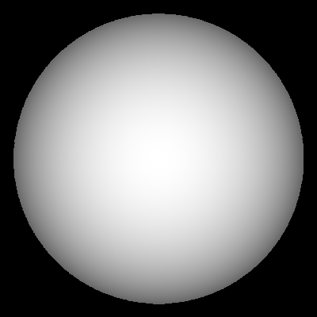
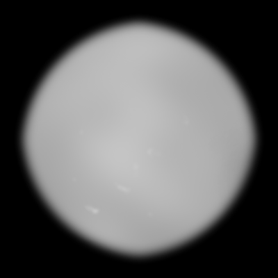
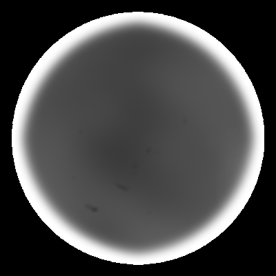
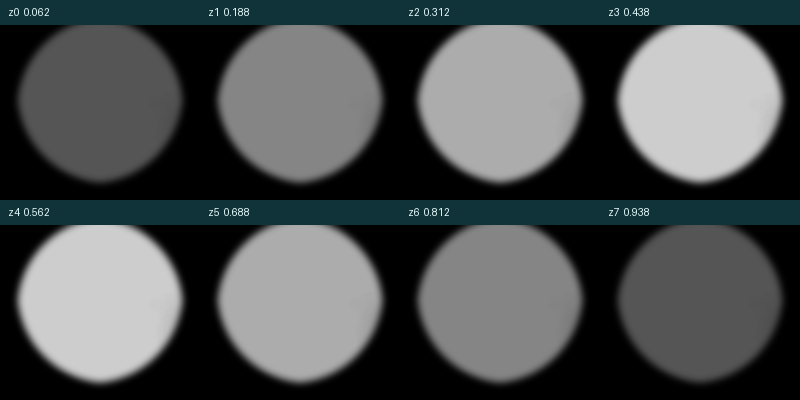
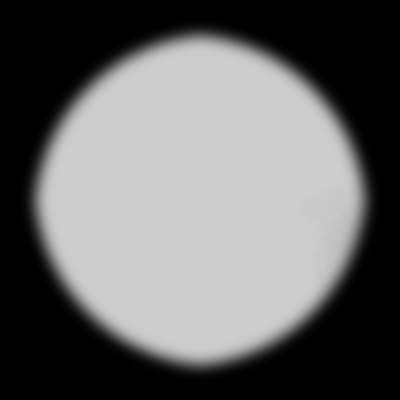
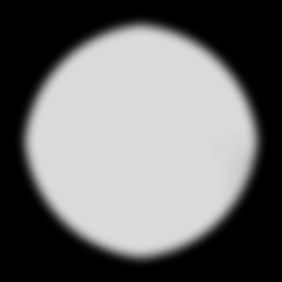
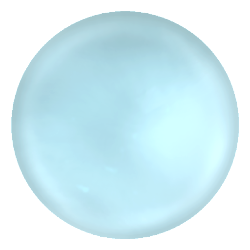
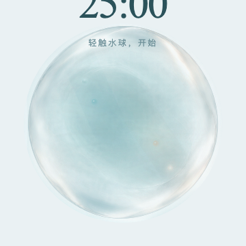
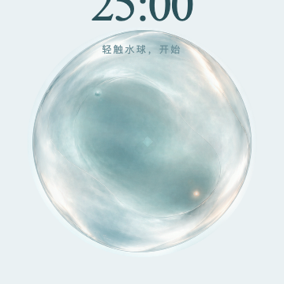

M2.2 STATIC VOLUMETRIC REPRESENTATION SPIKE
verification-only · M1 sources frozen · analytic sphere ray · no fluid simulation · no animation · no production migration
M2.2 VOLUMETRIC HERO
DERIVED 8-SLICE DENSITY ATLAS · SHELL FROZEN
RAY DEBUG / SOURCE → DENSITY → TRANSMITTANCE



Z SLICE MONTAGE



切片由 frozen neutral-water-volume / thickness / detail 派生；没有改写 M1 source pixels。厚度控制局部 depth extent，alpha 控制 mass density，detail 只作为小幅 density / optical perturbation。
M2.1 BASELINE / M2.2 SPIKE / FINAL ART


